Flow 2: Salpingo-Contrast Ultrasound After SIS
- Sequence:
• Perform SIS first.
• Follow with salpingo-contrast ultrasound.
- Advantages:
Eliminates interference from microbubbles during SIS, ensuring high-quality imaging of the uterine cavity
Facilitates better 3D visualization of the relative spatial position of the contrast catheter within the uterine cavity, reducing the likelihood of false-positive results caused by improper catheter placement
When the primary purpose is evaluating tubal patency, Flow 1 is recommended, with the following step-by-step procedure for HyCoSy:
1. Routine 2D and 3D ultrasonography
(a) Observe the uterus, bilateral adnexa, and pelvis
Put the transvaginal probe into a sterilized cover and insert it into the vagina to
• Observe the thickness of the endometrium.
• Look for any intrauterine lesions or malformations.
• Assess for lesions of the uterus, ovaries, and fallopian tubes.
• Examine the echogenicity of the uterine serosa (noting whether calcification is present).
• Check for fluid accumulation or any strip-like echoes in the pelvic cavity.
(b) Adjust the size and position of the water balloon
The position of the contrast catheter and the size of the water balloon significantly affect both the procedure and results.
Oversized water balloon:
• May cause discomfort and pain due to excessive pressure on the uterine cavity
• Increases the likelihood of contrast reflux or tubal spasms
Undersized water balloon:
Prone to catheter dislodgement, which may compromise the procedure. Optimal size and position of the water balloon:
The water balloon should match the uterine cavity's dimensions and the cervix's elasticity.
Ideal Proportions: The balloon's upper and lower diameters should account for $ 1/3 $ to $ 1/2 $ of the uterine cavity length.
The lower edge of the balloon should align with the internal cervical os.
• The balloon should be either spherical or ellipsoidal.
- The catheter should be gently pulled to ensure that the balloon is not dislodged, and the catheter tip should avoid positioning in the uterine horns (as shown in Figs. 5.2, 5.3, and 5.4).
(c) Position of the uterus and ovaries and the sliding sign
Observe the position of the ovaries in relation to the uterus and predetermine the area of tubal alignment. Gently manipulate the uterus and ovaries with the probe or apply gentle pressure on the patient's lower abdomen with a hand to observe any sliding of the uterus or ovaries relative to the surrounding tissues. During this process, the patient should be questioned about any tenderness (as shown in Figs. 5.5 and 5.6).
• Sliding sign (+): The presence of relative movement between the uterus, ovaries, and surrounding tissues indicates a positive sliding sign, suggesting no adhesions.
• Sliding sign (−): Poor mobility or the absence of sliding may indicate the presence of adhesions. This requires further investigation for conditions such as pelvic infection or endometriosis.
2. Real-time 3D contrast ultrasonography
(a) Initial preparation and positioning
The procedure begins with a 3D trial scan to identify the contrast plane and determine the best position for visualizing the uterine horns and fallopian tubes. The goal is to include the uterine cavity and both ovaries within
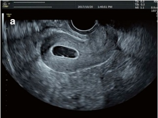
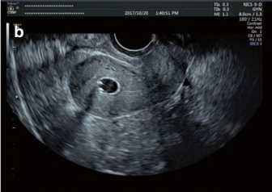
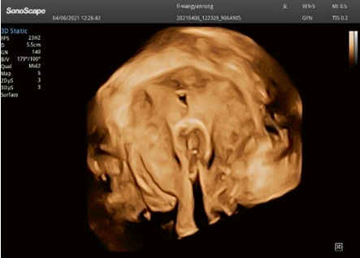
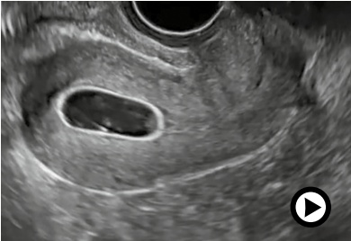
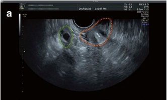
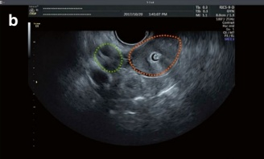
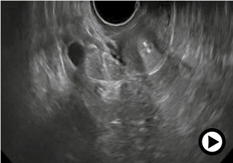
the volume scan. If it is not possible to capture both uterine horns and ovaries simultaneously, the contrast procedure can be performed separately on each side.
Transvaginal ultrasonography is typically used, with the uterus positioned in either an anteverted or retroverted orientation to improve tubal visualization. If the uterus is positioned too horizontally, causing the uterine horns to appear in the far field and making tubal imaging difficult, transabdominal ultrasonography may be considered as an alternative. To ensure optimal imaging, adjust the contrast settings, maximize the image frame, and minimize background noise.
(b) Performing the contrast procedure
Activate the 4D contrast mode and have an assistant slowly administer the contrast agent or operate the delivery device. Carefully observe the process, starting with the injection of the contrast agent into the uterus and continuing until the agent diffuses into the pelvis.
The timing of image acquisition is influenced by the level of fallopian tube patency and the patient's tolerance. Typically, imaging begins when the contrast catheter is visible and continues until a stable diffusion image of the pelvis is achieved. In cases of partial or complete fallopian tube obstruction, imaging may need to stop if the patient experiences significant discomfort or if uterine cavity pressure exceeds safety limits.
After obtaining satisfactory images, save the video recordings for review (refer to Figs. 5.7 and 5.8).
(c) (Optional) high-resolution imaging
For additional details, high-resolution static 3D ultrasonograms of the fallopian tubes can be captured. To ensure precise visualization, acquire volume images of the left and right fallopian tubes separately.
- Real-time 2D contrast ultrasonography
Real-time 2D contrast ultrasonography utilizes multimodal imaging, often performed in dual-frame mode, for enhanced visualization and comparison.
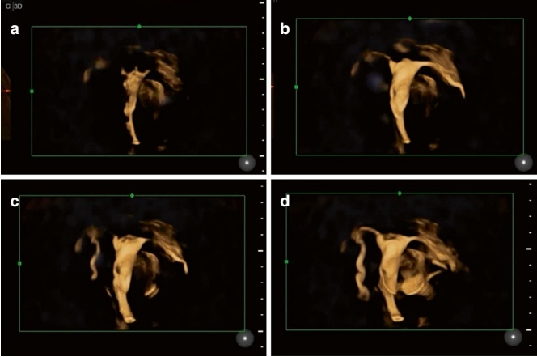
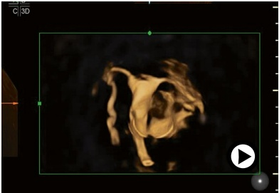
(a) 2D observation in contrast mode
Begin by tracing the trajectory of the fallopian tubes in contrast mode (refer to Figs. 5.9, 5.10, and 5.11). Focus on evaluating the fluidity of the contrast agent, paying close attention to how it flows around the periovarian region and disperses throughout the pelvis (refer to Fig. 5.12).
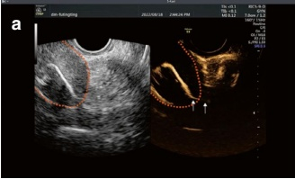
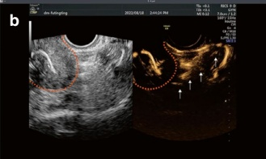
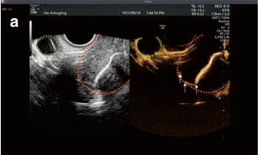
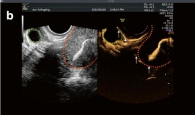
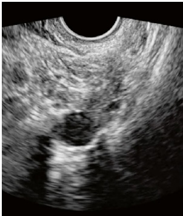
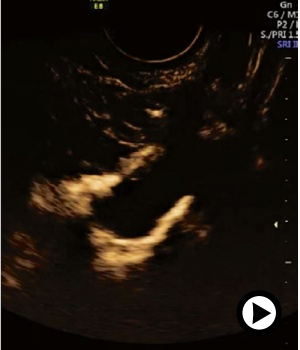
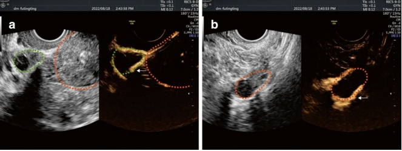
(b) B-mode or color doppler mode
Switch to B-mode or color Doppler mode to observe the contrast agent in relation to surrounding anatomical structures. Track the agent's trajectory within the fallopian tubes, ensuring detailed evaluation of the following:
• The presence of dilatation in the fallopian tubes
• The morphology of the fimbrial part
• The echogenicity of the tubal wall
This step provides critical complementary information to the previously assessed contrast patterns (refer to Figs. 5.13, 5.14, 5.15, and 5.16).
4. Pelvic SIS
Pelvic SIS is performed by continuing the injection of 50–200 mL of 0.9% saline through the original contrast catheter. The anechoic fluid can be visualized by ultrasound as it enters the pelvis through the fallopian tubes and accumulates in the pelvic cavity. SIS effectively demonstrates the movement of the tubal fimbriae, revealing whether they are swinging freely or are restricted (refer to Figs. 5.17 and 5.18).
Additionally, SIS allows for the identification of strip-like or abnormal mass echoes within the pelvis. However, this examination may only be successfully performed in some patients due to varying degrees of tubal patency.
- Uterine SIS
(a) Reduction of the balloon:
The fluid in the balloon should be reduced to 0.5–1.0 mL to obtain a clear view of the uterine cavity while preventing the catheter from dislodging. The upper and lower diameters of the balloon should account for approximately 1/5 to 1/4 of the length of the uterine cavity.
(b) 2D negative contrast
The uterine cavity is repeatedly rinsed by injecting saline through the catheter. This procedure minimizes residual microbubbles' impact on the
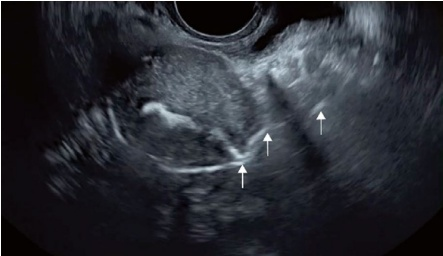
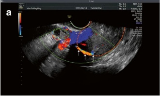
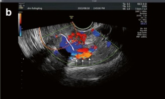
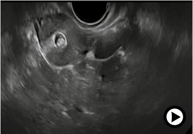
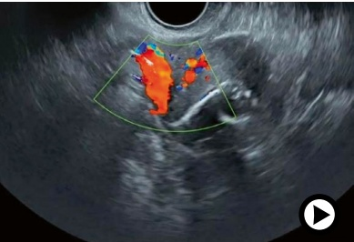
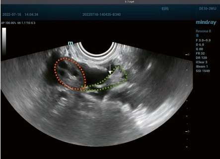
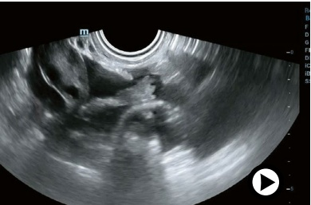
uterine cavity display and helps expand it. Uterine SIS is particularly effective for assessing abnormalities that are difficult to distinguish on conventional 2D and 3D ultrasound, such as endometrial polyps, intrauterine adhesions, submucosal leiomyomas, and cesarean scar defects (refer to Figs. 5.19 and 5.20).
6. Image analysis and reporting
Replay the captured images and perform postprocessing to refine the quality. Select the necessary images based on the specific times and directions of the contrast agent's flow and compile these into a comprehensive report.
The report should include four key sections:
(a) Routine ultrasound findings: A description of the uterus, ovaries, and pelvis as observed during the standard ultrasound scan
(b) Uterine morphology and diseases: A detailed assessment of the uterine structure and any abnormalities or diseases detected
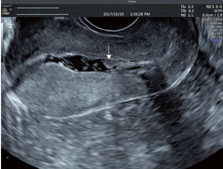
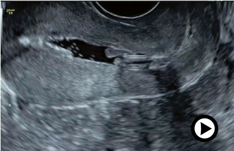
(c) Tubal patency: An evaluation and diagnosis of the fallopian tubes' patency based on contrast imaging
(d) Contrast dispersion in the pelvis: A description of how the contrast agent disperses within the pelvic cavity, providing insights into the anatomy and potential issues